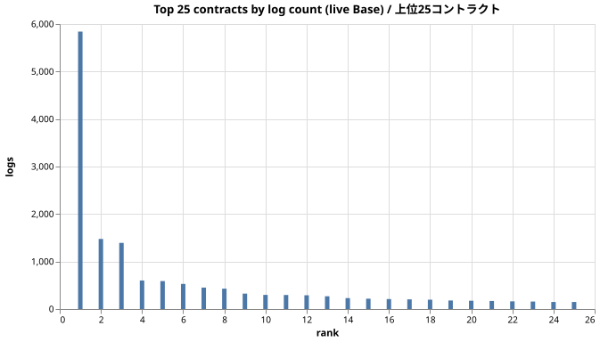
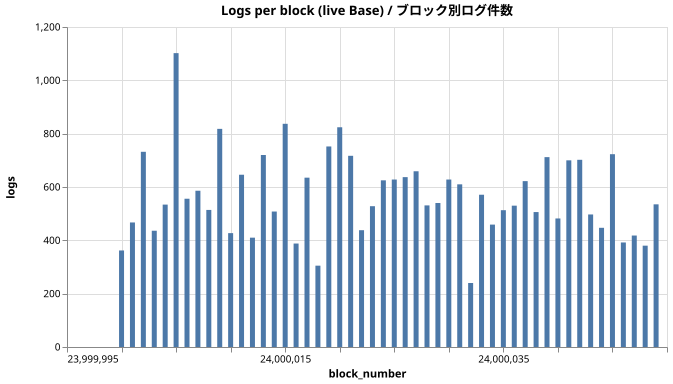
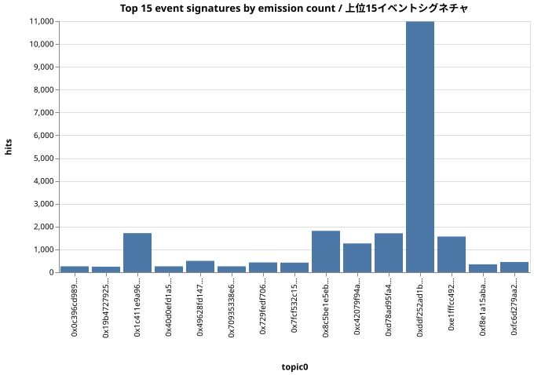
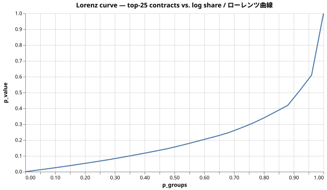

エグゼクティブサマリー
Executive summary
- Base メインネットの 50 ブロック（24000000-24000049、計 50 ブロック）に28529 件のログ。
- 1629 個のコントラクトがイベントを発行、671 種類のイベントシグネチャを観測。
- トップ1のコントラクト（WETH (canonical L2 predeploy)）が当該ウィンドウのログ全体の 20.5% を占めました。
- 期間: 2024-12-21T13:55:47.000Z ～ 2024-12-21T13:57:25.000Z（Base メインネット、約2秒ブロック）。
- データは公開 Subsquid アーカイブから live で取得。シードデータは一切使っていません。
- 28529 logs across 50 blocks of Base mainnet (24000000 → 24000049, 50 blocks).
- 1629 distinct contracts emitted events; 671 distinct event signatures.
- Top-1 contract (WETH (canonical L2 predeploy)) accounted for 20.5% of all logs in this window.
- Window: 2024-12-21T13:55:47.000Z → 2024-12-21T13:57:25.000Z (Base mainnet, ~2-second block time).
- Data was pulled live from the public Subsquid archive — no synthetic seed used here.
1. メソドロジー & データ来歴
1. Methodology & live-data provenance
pull: chainq pull --chain base --from 24000000 --to 24000049 を https://v2.archive.subsquid.io/network/base-mainnet に対して実行。28529 行のログを取得（snapshot パッケージの row counter は 28529 と一致）。
エンジン: DuckDB をプロセス内で起動し、取得した Parquet を直接読みます（recall キャッシュは未使用）。
クエリ: 4 本のアドホック SELECT（総数・トップ発行コントラクト・ブロックごとのログ件数・トップイベントシグネチャ）に加え、in-process の concentrationSuite で HHI / Gini / ローレンツ曲線を計算。
横参照: トップコントラクトは、Base の主要 predeploy + 主要トークンのハードコードラベルと突き合わせています（次セクションを参照）。マッチしないアドレスは生のまま表示。
Pull: chainq pull --chain base --from 24000000 --to 24000049 against https://v2.archive.subsquid.io/network/base-mainnet. Returned 28529 log rows, 28529 confirmed by the snapshot package's row counter.
Engine: DuckDB in-process over the resulting Parquet (no caching layer used).
Queries: four ad-hoc SELECTs (totals, top emitters, per-block log counts, top event signatures) plus the in-process concentrationSuite helper for HHI / Gini / Lorenz.
Cross-reference: the top contracts are matched against a hardcoded label map of well-known Base predeploys and major tokens (see Top contracts section). Unmatched addresses display their raw address.
2. トップ25コントラクト (Base 実コントラクト)
2. Top 25 contracts (real Base emitters)

2a. ラベル付き上位25
2a. Top 25 (labelled)
| rank | address | logs | share | label |
|---|---|---|---|---|
| 1 | 0x4200000000000000000000000000000000000006 | 5841 | 20.47% | WETH (canonical L2 predeploy) |
| 2 | 0x833589fcd6edb6e08f4c7c32d4f71b54bda02913 | 1476 | 5.17% | USDC (Circle native on Base) |
| 3 | 0x827922686190790b37229fd06084350e74485b72 | 1393 | 4.88% | — |
| 4 | 0xb84099396f8de44d2c996ed708126a2f059406f4 | 601 | 2.11% | — |
| 5 | 0x5ff137d4b0fdcd49dca30c7cf57e578a026d2789 | 589 | 2.06% | — |
| 6 | 0xca73ed1815e5915489570014e024b7ebe65de679 | 529 | 1.85% | — |
| 7 | 0x2faeb0760d4230ef2ac21496bb4f0b47d634fd4c | 452 | 1.58% | — |
| 8 | 0x974474c8bcb36302be93858466728271fb36544e | 429 | 1.50% | — |
| 9 | 0xcbb7c0000ab88b473b1f5afd9ef808440eed33bf | 325 | 1.14% | — |
| 10 | 0x940181a94a35a4569e4529a3cdfb74e38fd98631 | 298 | 1.04% | — |
| 11 | 0xdc88389898a30f67a2165791f1bdcf2d2ae94dcf | 296 | 1.04% | — |
| 12 | 0xc1a6d4ccb0e913c7f785fcc60811b34bc8cc801c | 290 | 1.02% | — |
| 13 | 0x6b2c0c7be2048daa9b5527982c29f48062b34d58 | 269 | 0.94% | — |
| 14 | 0x04d72fb4803b4e02f14971e5bd092375eb330749 | 230 | 0.81% | — |
| 15 | 0x25646338f3d92d9c28a7ab9eb543efccfd67621b | 218 | 0.76% | — |
3. ブロック単位のログ件数
3. Logs per block

4. イベントシグネチャ (topic0) 上位
4. Top event signatures (topic0)

5. 集中度指標（上位25内）
5. Concentration suite (over top-25)
| metric | value |
|---|---|
| top-1 share | 38.97% |
| top-5 share | 66.04% |
| top-10 share | 79.61% |
| HHI | 0.1801 |
| Gini | 0.581 |

注意
Caveats
取得ウィンドウは意図的に小さくしています（50 ブロック ≈ 100 秒の Base 履歴）。1 日分や 1 週間分への拡張は chainq pull の引数を変えて、予算上限を上げるだけです。
集中度指標は 上位25コントラクト内 だけで計算しています。本格的なレポートではウィンドウ内の全 1629 コントラクトを対象にすべきで、修正は 1 行のコード変更で済みます。本レポートの目的はデータ来歴の証明であって、解釈の精緻さではありません。
イベントシグネチャの topic0 は 32 バイトハッシュです。4byte 系の ABI レジストリと突き合わせない限り人間可読にはなりません（本ビルドでは未接続）。
Pulled window is intentionally small (50 blocks ≈ 100 seconds of Base history). Extending to a day or longer is one more parameter on chainq pull and a corresponding hike on the budget cap.
The Concentration suite is computed over the top-25 emitters only, not over all 1629 contracts in the window — running it over the full set would be more meaningful for a real-world report, and is a one-line code change. This report's purpose is the provenance proof, not the substantive analysis.
Event-signature topic0 strings are 32-byte hashes — most are not human-readable until joined with a 4byte-style ABI registry (not wired in this build).
再現手順
Reproducing this report
``bash``
pnpm exec tsx scripts/live-base-demo.ts
open docs/reports/05-base-live.html
スクリプトは公開 Subsquid アーカイブに対して chainq pull を 1 回だけ実行します — API キーも RPC ノードも不要。取得した Parquet に対して DuckDB の SELECT を 4 本走らせ、4 枚のチャートを描画し、この単一 HTML レポートを書き出します。別のブロック範囲で再実行するには定数を 1 つ書き換えるだけ。
``bash``
pnpm exec tsx scripts/live-base-demo.ts
open docs/reports/05-base-live.html
The script issues exactly one chainq pull to the public Subsquid archive — no API keys, no RPC node. It then runs four ad-hoc DuckDB queries on the resulting Parquet, renders four charts, and writes this single-file HTML report. Re-running on a different block range is one constant edit.